Mbombela(formerly Nespruit) is a city in the northeastern South Africa. It is the capital of the Mpumalanga province. Located on the Crocodile River,Mbombela lies about 110 km(68 m) by west of the Mozambique border,330 km(210m) east of Johannesburg and about 82 km(51 m) north of the Eswatini border. Mbombela was one of the host cities of the 2010 FIFA World Cup. Nelspruit has been called the gateway to Mpuumalanga province and the Kruger National Park. With its sub-tropical climate and abundant sunshine and lush covered hills and valleys it forms the ideal base to explore Mpumalanga from. It has many beautiful nature and hiking trails. There's also a mall with an eight-theatre cinema complex,casino and entertainment centre.
 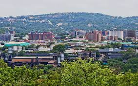
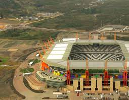
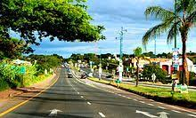
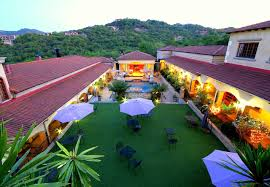
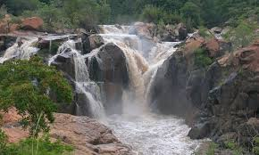
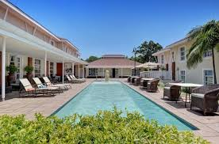
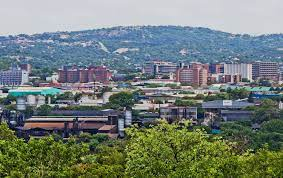
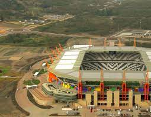
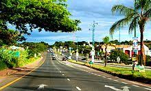
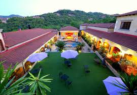
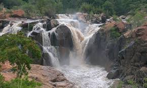
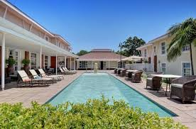